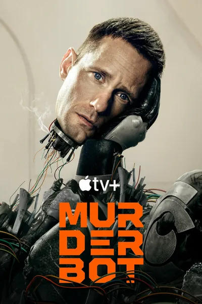

Сериал · 2025 · Киберпанк, Фантастика
Андроид-охранник взломал свой модуль контроля и обрел свободу — но тратит ее не на бунт, а на просмотр сериалов. Для прикрытия он продолжает работать телохранителем у ученых, которых презирает, хотя втайне заботится о них больше, чем готов признать. История, основанная на повестях Марты Уэллс: редкий случай, когда искусственный интеллект на экране — это не угроза и не мессия, а интроверт с тревожностью и склонностью к метаюмору. Самый обаятельный портрет машины, которая просто хочет, чтобы ее оставили в покое.
A security android has hacked its governor module and gained freedom — which it spends not on rebellion but on watching TV shows. For cover it keeps working as a bodyguard for scientists it despises, secretly caring for them more than it will admit. Based on Martha Wells's novellas: a rare case where AI on screen is neither threat nor messiah but an introvert with anxiety and meta-humor. The most charming portrait of a machine that just wants to be left alone.
← Вернуться в каталог IT Movies